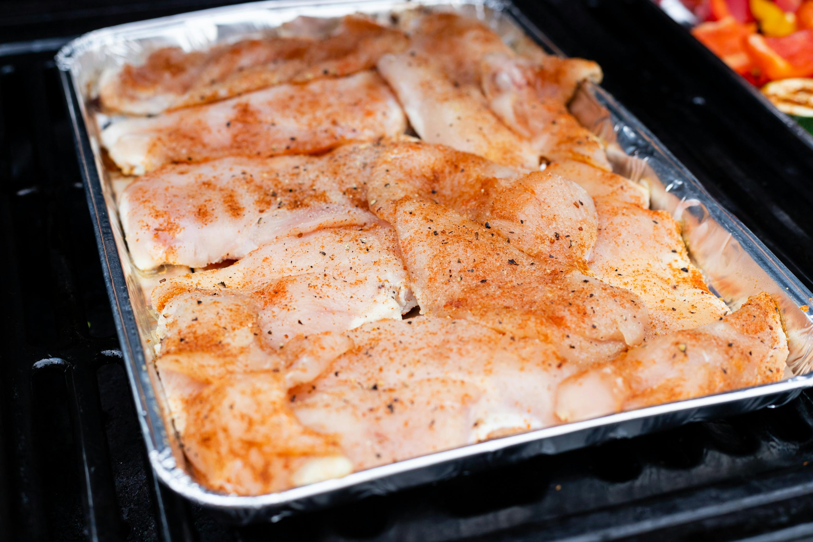

Home
Slow Cooker Chicken Tacos Recipe

Description
This slow cooker chicken tacos recipe is easy to make with just 3 ingredients for flavourful, super tender, shredded chicken. Spoon the chicken into warm tortillas for a very tasty meal any day of the week.
Ingredients
- 1 cup chicken broth
- 3 tablespoons taco seasoning mix
- 1 pound skinless, boneless chicken breasts
Steps
- Gather all ingredients.
- Combine chicken broth and taco seasoning mix in a bowl.

- Heat olive oil in a large skillet over medium heat. Add onion and celery; cook and stir until vegetables are tender, about 5 minutes. Season with salt and black pepper. Stir in Arborio rice and garlic; cook and stir until rice is lightly toasted, about 5 more minutes.
Home